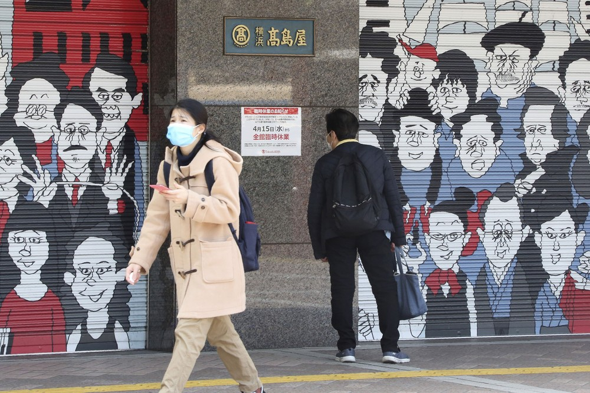

-
Como a pandemia impacta de maneira mais severa a vida das mulheres
Relátorios apontam que elas são mais vulneráveis e devem sofrer mais com o desemprego. Elas são 70% dos trabalhadores de saúde no mundo -

Coronavírus derruba popularidade de primeiro ministro no Japão
-

Debutante faz festa temática em casa:
'Nenhum de vocês está convidado'
-
Como a pandemia impacta de maneira mais severa a vida das mulheres
Relátorios apontam que elas são mais vulneráveis e devem sofrer mais com o desemprego. Elas são 70% dos trabalhadores de saúde no mundo -
Como a pandemia impacta de maneira mais severa a vida das mulheres
Relátorios apontam que elas são mais vulneráveis e devem sofrer mais com o desemprego. Elas são 70% dos trabalhadores de saúde no mundo